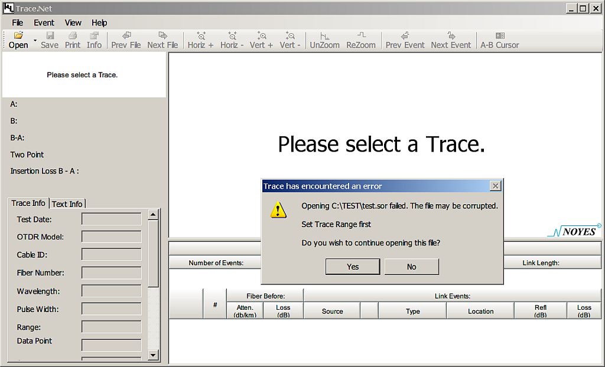
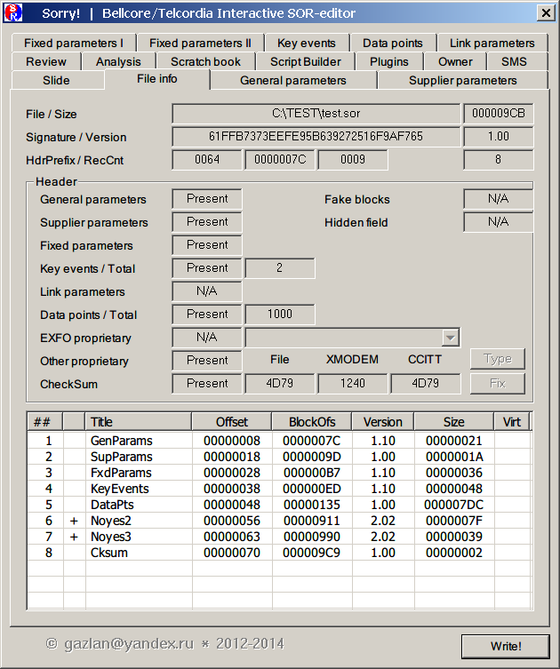

Почему Sorry!?
На это есть три причины:
- S и R - стандартные обозначения начала и конца кабеля
- .SOR - расширение формата, и программы просмотра часто включают расширение, как часть своего названия
- Многие фирмы-производители "железа" выпускают сопутствующий софт
для работы с их оборудованием. Нередко, остается впечатление, что написан он
студентами, нанятыми "на сдачу". Вплоть до того, что программы
просмотра не открывают SOR-файлы от рефлектометров того же вендора

Sorry! - это мой протест против многомегабайтных программ с функциональностью на два цента.

Назначение
Sorry! позиционируется как компактный, работающий с любого носителя,
исключительно быстрый вьювер и, одновременно, редактор SOR-файлов, с полным
доступом на чтение/запись ко всем полям стандартных блоков, raw-дампером
любых блоков (включая проприетарные), валидатором внутренних структур,
поддержкой групповой обработки (batch), специализированным 2D-редактором
для интерактивного редактирования трассы (с опцией 2D-печати на любой
установленный в системе принтер), однострочным скобочным калькулятором
и открытой архитектурой, позволяющей расширение функциональности за счет
плагинов.
Идеология редактора
Несмотря на то, что Sorry! предназначена просмотра и редактирования
SOR-файлов, за исключением того, что каждому стандартному блоку назначен
свой класс, .SOR-формат мало связан с внутренним представлением данных.
Sorry! открывает файл в режиме ReadOnly, десериализует, создавая внутреннюю
структуру (multiway tree) в памяти и немедленно закрывает. После этого
исходный файл может быть свободно удален, перемещен, открыт в другой
программе просмотра/редактирования - для работы Sorry! это неважно.
Все изменения, производимые при редактировании в программе Sorry!
выполняются над внутренними структурами и не затрагивают оригинальный
файл. Только при нажатии кнопки 'Write' происходит обратная сериализация
данных и запись в дисковый файл.
Эта техника относится ко всем блокам, исключая Data points. Единицей
редактирования трассы является выделенный (маркерами или мышью) сегмент, и
для его редактирования создается отдельная копия данных во внутреннем буфере.
Таким образом, выход из диалога редактирования сегмента без сохранения
отменяет все сделанные изменения и оригинальная трасса остается нетронутой.
Под капотом SOR-файла
Формально, .SOR-файл - это serialized multiway tree. Но не ищите этих слов в документации, их там нет. Возможно, инженеры Tellcordia (первоначального разработчика формата) и вовсе не оперировали категорией ADT, и это одна из причин, почему формат с более чем десятилетней историй все еще так плох и невнятен.
Надо сказать, что по сравнению с некоторыми другими форматами, SOR-файл устроен достаточно примитивно. Например, в нем отсутствует динамическое сжатие диапазона (a la Dolby noise-reduction system).
Обсуждение некоторых странностей формата можно найти в блоге компании Fiberizer (OTDR sor format vagueness), а вот выдержка из документации к программе Fiberdoc:
> Important notes:
>
> Unfortunately the current definitions of the Bellcore/Telcordia
> standards are not fully clear, which results in various
> misunderstandings in the implementation. Though FiberDoc tolerates
> some 'derivatives' of the standard, there is neither any guarantee,
> that Bellcore files of all suppliers can be read, nor can it be
> assured, that Bellcore files created by FiberDoc are readable by
> OTDR's or evaluation software of other suppliers.
Основным источником сведений по устройству SOR-файла (не считая, конечно,
найденных "in wilde" интересных экземпляров) является стандарт от Bellcore.
Он малодоступен ($700), и специфика отрасли (сварщики - не программисты)
способствует тому, что на рынке практически нет предложений пригодных для использования
программ просмотра и редактирования рефлектограмм. Кроме того, не все вендоры
тщательно следуют стандарту и почти все расширяют его собственными проприетарными
блоками (вплоть до потери совместимости).
Как уже говорилось, SOR-файл - это serialized multiway tree. Узлы (блоки)
записываются в выходной поток последовательно, размеры зависят от данных,
порядок почти произволен (блок индексов - Map - должен быть первым в потоке,
а блок CkSum, если представлен, для упрощения реализации, записывается последним).
Стандарт требует четырех обязательных блоков (включая Map), остальные, включая
проприетарные, оставлены на усмотрение вендора. Так же, по собственному усмотрению,
в нарушение стандарта, большинство вендоров реализует и расчет контрольной суммы
(CkSum), вероятно, с целью выявления несанкционированной модификации SOR-файлов.
Во всяком случае, программы и "железо" от таких производителей используют
несовпадающие алгоритмы, так что файл не может быть корректно подписан даже
после обработки в программе того же вендора.
Описание интерфейса программы
|